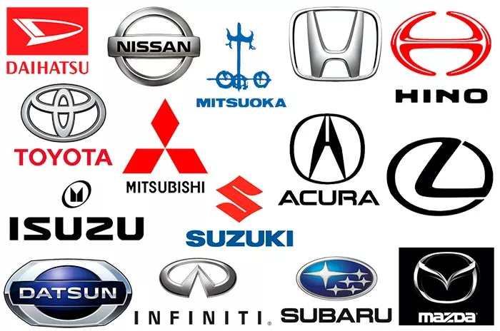

Японские марки автомобилей
Введение
Вряд ли кто-то поспорит с тем, что именно японские автомобили являются одними из самых надежных и востребованных в мировом автопроме. Этот факт также подтверждают многочисленные исследования и рейтинги, опубликованные в авторитетных журналах и на Интернет-ресурсах – верхние строчки в них всегда занимают авто японских марок.
